A custom property named Cmd with a Boolean default value of False (page 216)
Source: AVEVA InTouch for System Platform 2023 Training Manual, Module 3, Section 6 (pages 215–222)
This lesson covers custom properties in symbols — how to create them, configure their data types and visibility, and use the Button tool, Pushbutton animation, Show/Hide Symbol animations, and the TreatAsIcon property.
Reference: Module 3, Section 6 (pages 215–216)
Custom properties allow you to extend the functionality of embedded graphics by adding user-defined data fields. A custom property can contain a value or expression, an attribute from the automation object, a property of an element or graphic, a custom property of an embedded graphic, or a script function result.
Custom properties serve as the configuration interface for symbols — when a symbol is embedded in another graphic, its custom properties appear on the Properties tab, allowing designers to customize the symbol's behavior without modifying its internal logic.
Custom properties can be set to either Private or Public:
| Visibility | Behavior |
|---|---|
| Private | The property is hidden when the symbol is embedded — designers cannot see or modify it |
| Public | The property appears on the Properties tab when the symbol is embedded, allowing designers to customize it |
Custom properties can reference data using two approaches:
Tank1.InletValve.PVMe.InletValve.PVWhen public custom properties exist for an embedded graphic, they display on the Properties tab under the Custom Properties category when the graphic is selected.
Reference: Module 3, Section 6 (pages 216–217)
You create and edit custom properties through the Edit Custom Properties dialog box. Right-click the canvas and select Custom Properties to open it. Click the Add custom property (+) button at the top-left to add a new property, then configure its settings in the right panel.
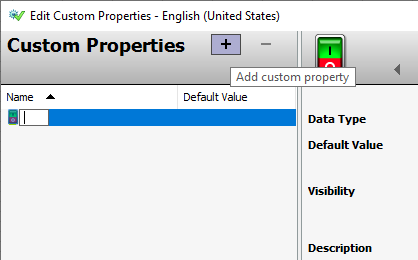
Each custom property has a data type that determines what kind of value it can hold. The available data types and their corresponding icons are:
| Data Type | Icon | Description |
|---|---|---|
| Boolean | 🟢🔴 | True/False or On/Off values |
| Double | 📊 | Double-precision floating point numbers |
| ElapsedTime | ⏱️ | Duration values |
| Float | 📈 | Single-precision floating point numbers |
| Integer | 🔢 | Whole numbers |
| String | 🔤 | Text values |
| Time | 🕐 | Date/time values |
| HistorySummary | 📉 | Historical data summary values |
Below are the data type icons as they appear in the Edit Custom Properties dialog:
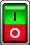
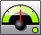
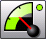
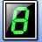
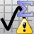
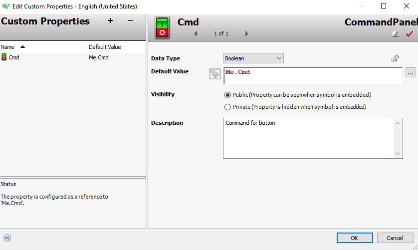
The Default Value is the initial value for the property. It can be a literal value, a reference to an object attribute, or an expression. Click the ellipsis button to browse for a reference using the Galaxy Browser. For String, Time, or ElapsedTime types, you can toggle between Static Text mode (literal value) and Expression or Reference mode (lookup or expression evaluation).
The Description field provides a brief note about the custom property. For symbols from built-in libraries, the description typically contains helpful tips on how to use the property.
Reference: Module 3, Section 6 (pages 218)
The Button tool lets you add interactive buttons to your graphics. To create a button, select the Button tool from the Tools pane, click and drag on the canvas to define the button's shape, and release. The button enters edit mode immediately — type a label and press Enter. You can also set the label through the Text property on the Properties tab.

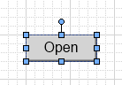
You can apply animations to buttons — Pushbutton, Value Display, Element Style, and others — to configure their runtime behavior and appearance.
Reference: Module 3, Section 6 (page 218)
The Pushbutton animation lets you configure an element to change Boolean, analog, or string references when clicked at runtime. In the Edit Animations dialog, you configure the Reference (the tag or expression to modify), the Action (Direct, Reverse, Toggle, Set, or Reset), and whether the change occurs on press or release.

| Action | Behavior |
|---|---|
| Direct | Writes the value directly to the reference |
| Reverse | Writes the opposite of the current value |
| Toggle | Toggles between True and False |
| Set | Writes True (or the configured value) to the reference |
| Reset | Writes False (or the configured default) to the reference |
Reference: Module 3, Section 6 (page 219)
The Show Symbol animation displays a specified graphic as a pop-up window when the element is clicked at runtime. This pop-up appears independently of any InTouch window, giving you full control over the popup's behavior. You can configure:
The Hide Symbol animation closes the current graphic, a graphic shown by a specified element, or can be triggered by a shortcut key.
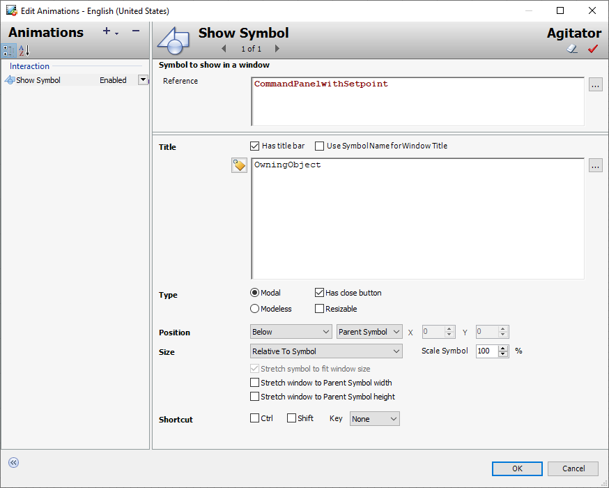
Reference: Module 3, Section 6 (page 220)
The TreatAsIcon property controls how interaction animations behave for embedded graphics. When set to True, the interaction animations defined in the embedding graphic take precedence. When set to False, the animations defined within the embedded graphic itself take precedence.
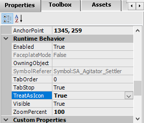
Reference: Module 3, Lab 9 (pages 221–222)
To begin, you create a new symbol called CommandPanel on the Graphics tab in the Training toolset. Then you add custom properties by right-clicking the canvas and selecting Custom Properties. Click the Add custom property button, name the property Cmd, and configure it as a Boolean type with Public visibility.
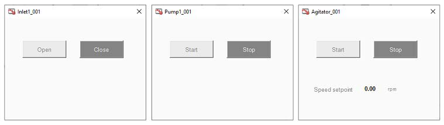
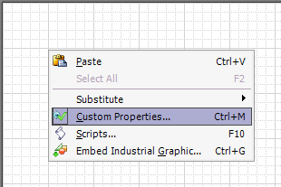

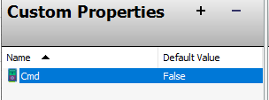
1. What is the difference between Private and Public custom properties?
Private custom properties are hidden when the symbol is embedded — designers cannot see or modify them. Public custom properties appear on the Properties tab when the symbol is embedded, allowing designers to customize them per instance.
2. What data types are available for custom properties in AVEVA InTouch?
Boolean, Double, ElapsedTime, Float, Integer, String, Time, and HistorySummary.
3. How does the TreatAsIcon property affect animation behavior for embedded graphics?
When TreatAsIcon is True, interaction animations defined in the embedding graphic take precedence over those in the embedded graphic. When False, the embedded graphic's own animations take precedence.
4. What can you configure with a Show Symbol animation?
You can configure which graphic appears as a pop-up, whether it has a title bar, whether it is modal or modeless, whether it has a close button, whether it can be resized, its position and size, and a keyboard shortcut for display.
5. What is the primary purpose of custom properties in symbols?
Custom properties serve as the configuration interface for symbols — they expose configuration options to designers when symbols are embedded, allowing symbols to be customized per instance without modifying their internal logic. This makes symbols reusable and configurable.
Module 3 — Section 6: Custom Properties. AVEVA InTouch for System Platform 2023 Training.